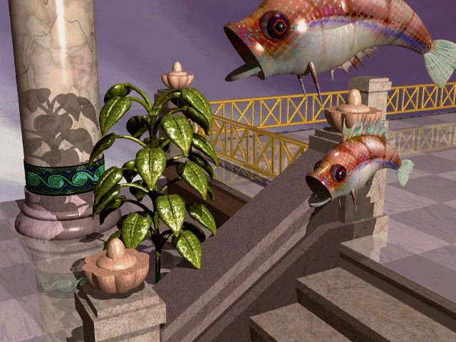

2 Corinthians 4:16-18 - "So we do not lose heart. Though our outer self is wasting away, our inner self is being renewed day by day. For this light momentary affliction is preparing for us an eternal weight of glory beyond all comparison, as we look not to the things that are seen but to the things that are unseen."
